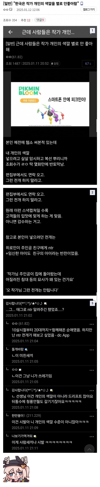
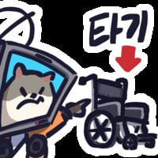
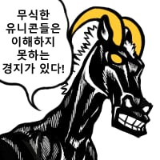

이 미친새끼

이 미친새끼
싸잡아 묶지 마시오. 순애 쓰는 사람들이 얼마나 많은데 왜 모든 창작자들을 다 ntr충으로 만드나
그리고 그런 걸 좋아했으면 드리프트 하는 게 아니라, 처음부터 ntr 박고 시작을 했지
독자나 시청자들이 큰 충격을 받는 반전을 만들고는 싶은데, 그럴 능력은 없는 놈들이나 느닷없이 드리프트 하는 거지
월클병 초기임
나는 왕도 따라가는 저런 어중이떠중이와 다르다
내가 보여주겠다 모두에게 증명하겠다 하고있는거임
순애 = 전개가 뻔하고 지루하고 현학적임
NTR = 저 관계가 언제 어떻게 들킬지, 결국 마지막에 이어지는건 남주(엿던것)일지, 금태양일지, 아니면 아직 등장떡밥도 없는 외국인 청년 밥씨일지 다지선다를 걸어 전개가 흥미진진해짐


뭐 추리소설에서의 범인 반전 그런거면 몰라도 NTR반전은 시ㅂ ㅏㅋㅋㅋㅋㅋㅋ
정신병이 어떻게 개인의 색
네웹중에 소꿉친구 콤플렉스가 순애물로 밀다가 ntr각 존나 재서 한동안 댓글에 욕만 있었지
바로 쌍욕 가능
이게그제주도감귤인가뭔가하는그거냐
NTR을 보편적 장르라고 착각하나본데, 개씹극호불호 영역이란걸 좀 알아야...
ㅋㅋ

사람색기아니네 이거
Ntr의 꼴림을 모르는 너희들이 불쌍해..
진구야!! 그냥 죽어!!
NTR 좋아하는데 무조건 태그 걸어놓으셈. 그래야 찾지.
ntr을 다른데서 그냥 쓰려면 이야기 시작에서 주인공 복수 계기로 쓰는거 외엔 가능하긴 하냐

지들이 빨던 캐릭터 죽으면 개씹지랄염병 떨더라 미친새끼들
저렇게 드리프트하는 건 정신병의 영역같음
NTR이아니라 NTL을 좋아하는거야
요즘 로판들보면 초반부터 그지랄하는거있던데
NTR태그 넣어놓은 순애물을 쓰고싶다
독자들이 항상 긴장감을 느낄수 있게 중간중간 떡밥도 주지만
끝날때까지 NTR은 나오지않고 그냥 순애로 끝나는 소설을 쓰고싶다
저저 씨발롬이

이상하게 창작하는 사람들은 ntr 좋아하더라. 드라마 작가들도 그렇고.